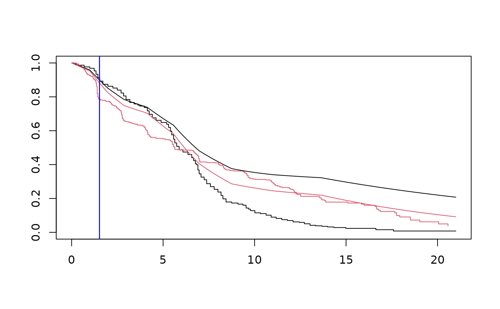

Computes the crossing survival times
Usage
# S3 method for yppe
crossTime(object, newdata1, newdata2, conf.level = 0.95, nboot = 1000, ...)Arguments
- object
an object of class yppe
- newdata1
a data frame containing the first set of explanatory variables
- newdata2
a data frame containing the second set of explanatory variables
- conf.level
level of the confidence/credible intervals
- nboot
number of bootstrap samples (default nboot=1000); ignored if approach="bayes".
- ...
further arguments passed to or from other methods.
Examples
# \donttest{
# ML approach:
library(YPPE)
mle <- yppe(Surv(time, status)~arm, data=ipass, n_int=10, approach="mle", init = 0)
summary(mle)
#> Call:
#> yppe(formula = Surv(time, status) ~ arm, data = ipass, n_int = 10,
#> approach = "mle", init = 0)
#>
#> Short-term coefficients:
#> Estimate StdErr z.value p.value
#> arm 1.04164 0.16656 6.2539 4.004e-10 ***
#> ---
#> Signif. codes: 0 ‘***’ 0.001 ‘**’ 0.01 ‘*’ 0.05 ‘.’ 0.1 ‘ ’ 1
#>
#> Long-term coefficients:
#> Estimate StdErr z.value p.value
#> arm -1.238455 0.084558 -14.646 < 2.2e-16 ***
#> ---
#> Signif. codes: 0 ‘***’ 0.001 ‘**’ 0.01 ‘*’ 0.05 ‘.’ 0.1 ‘ ’ 1
#>
#> ---
#> loglik = -2759.652 AIC = 5543.305
newdata1 <- data.frame(arm=0)
newdata2 <- data.frame(arm=1)
tcross <- crossTime(mle, newdata1, newdata2, nboot = 10)
tcross
#> Est. 2.5% 97.5%
#> 1 5.883346 NA NA
ekm <- survfit(Surv(time, status)~arm, data=ipass)
newdata <- data.frame(arm=0:1)
St <- survfit(mle, newdata)
plot(ekm, col=1:2)
with(St, lines(time, surv[[1]]))
with(St, lines(time, surv[[2]], col=2))
abline(v=tcross, col="blue")
# Bayesian approach:
bayes <- yppe(Surv(time, status)~arm, data=ipass, n_int=10, approach="bayes", chains=1, iter=10)
#>
#> SAMPLING FOR MODEL 'yppe' NOW (CHAIN 1).
#> Chain 1:
#> Chain 1: Gradient evaluation took 0.000687 seconds
#> Chain 1: 1000 transitions using 10 leapfrog steps per transition would take 6.87 seconds.
#> Chain 1: Adjust your expectations accordingly!
#> Chain 1:
#> Chain 1:
#> Chain 1: WARNING: No variance estimation is
#> Chain 1: performed for num_warmup < 20
#> Chain 1:
#> Chain 1: Iteration: 1 / 10 [ 10%] (Warmup)
#> Chain 1: Iteration: 2 / 10 [ 20%] (Warmup)
#> Chain 1: Iteration: 3 / 10 [ 30%] (Warmup)
#> Chain 1: Iteration: 4 / 10 [ 40%] (Warmup)
#> Chain 1: Iteration: 5 / 10 [ 50%] (Warmup)
#> Chain 1: Iteration: 6 / 10 [ 60%] (Sampling)
#> Chain 1: Iteration: 7 / 10 [ 70%] (Sampling)
#> Chain 1: Iteration: 8 / 10 [ 80%] (Sampling)
#> Chain 1: Iteration: 9 / 10 [ 90%] (Sampling)
#> Chain 1: Iteration: 10 / 10 [100%] (Sampling)
#> Chain 1:
#> Chain 1: Elapsed Time: 0.010373 seconds (Warm-up)
#> Chain 1: 0.013981 seconds (Sampling)
#> Chain 1: 0.024354 seconds (Total)
#> Chain 1:
#> Warning: There were 1 divergent transitions after warmup. See
#> https://mc-stan.org/misc/warnings.html#divergent-transitions-after-warmup
#> to find out why this is a problem and how to eliminate them.
#> Warning: There were 1 chains where the estimated Bayesian Fraction of Missing Information was low. See
#> https://mc-stan.org/misc/warnings.html#bfmi-low
#> Warning: Examine the pairs() plot to diagnose sampling problems
#> Warning: The largest R-hat is Inf, indicating chains have not mixed.
#> Running the chains for more iterations may help. See
#> https://mc-stan.org/misc/warnings.html#r-hat
summary(bayes)
#> Call:
#> yppe(formula = Surv(time, status) ~ arm, data = ipass, n_int = 10,
#> approach = "bayes", chains = 1, iter = 10)
#>
#> Short-term coefficients:
#> mean se_mean sd 2.5% 25% 50% 75% 97.5% n_eff Rhat
#> arm 0.391 0.094 0.176 0.255 0.266 0.266 0.584 0.584 3.495 Inf
#>
#> Long-term coefficients:
#> mean se_mean sd 2.5% 25% 50% 75% 97.5% n_eff Rhat
#> arm -0.647 0.252 0.45 -1.137 -1.137 -0.404 -0.279 -0.279 3.19 Inf
#>
#> ---
#> Inference for Stan model: yppe.
#> 1 chains, each with iter=10; warmup=5; thin=1;
#> post-warmup draws per chain=5, total post-warmup draws=5.
#>
newdata1 <- data.frame(arm=0)
newdata2 <- data.frame(arm=1)
tcross <- crossTime(bayes, newdata1, newdata2)
tcross
#> Est. 2.5% 97.5%
#> 1 7.200161 4.70586 9.943226
ekm <- survfit(Surv(time, status)~arm, data=ipass)
newdata <- data.frame(arm=0:1)
St <- survfit(bayes, newdata)
plot(ekm, col=1:2)
with(St, lines(time, surv[[1]]))
with(St, lines(time, surv[[2]], col=2))
abline(v=tcross, col="blue")

# }